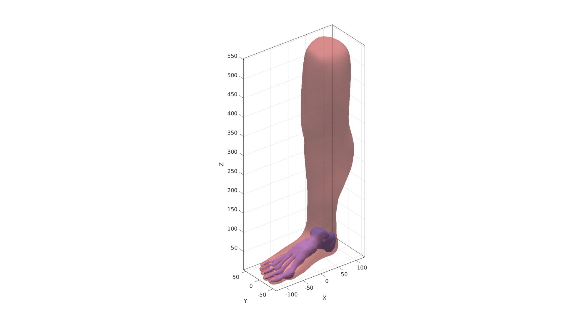
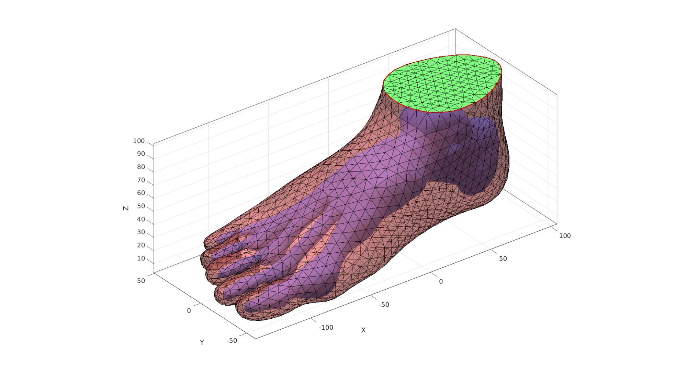
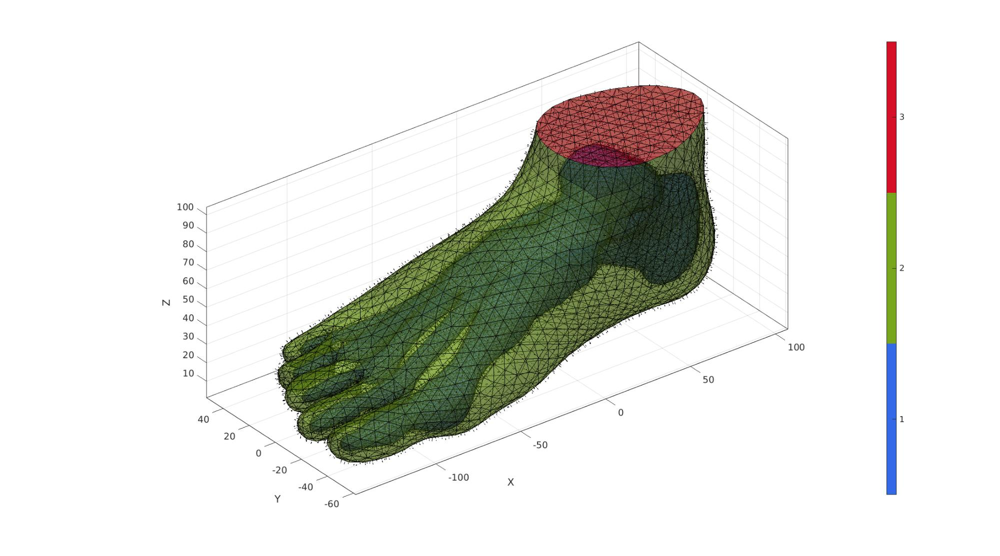
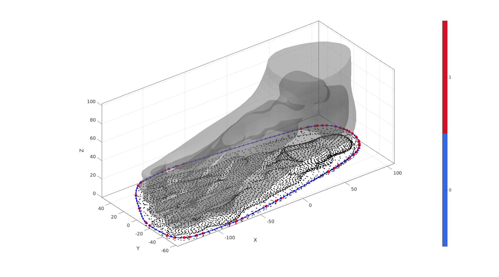
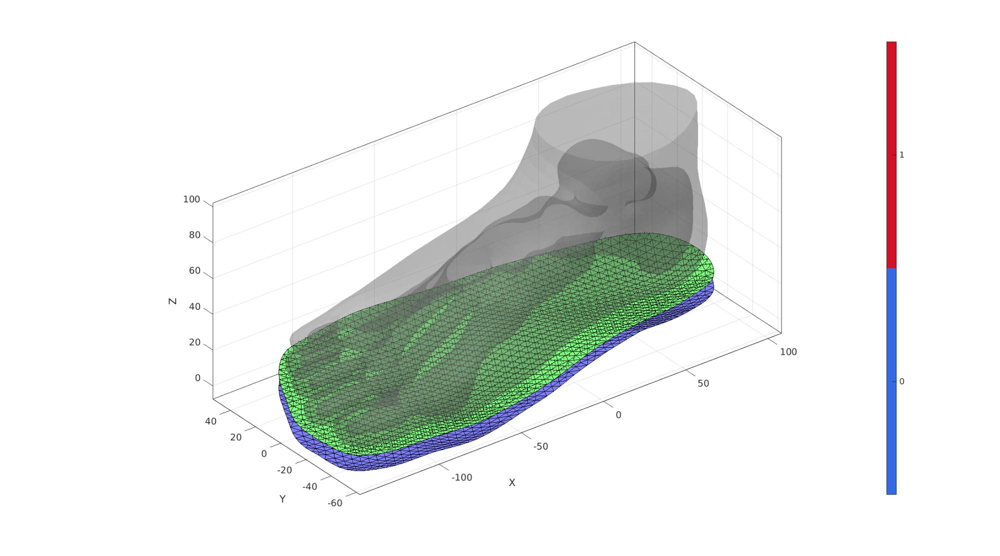
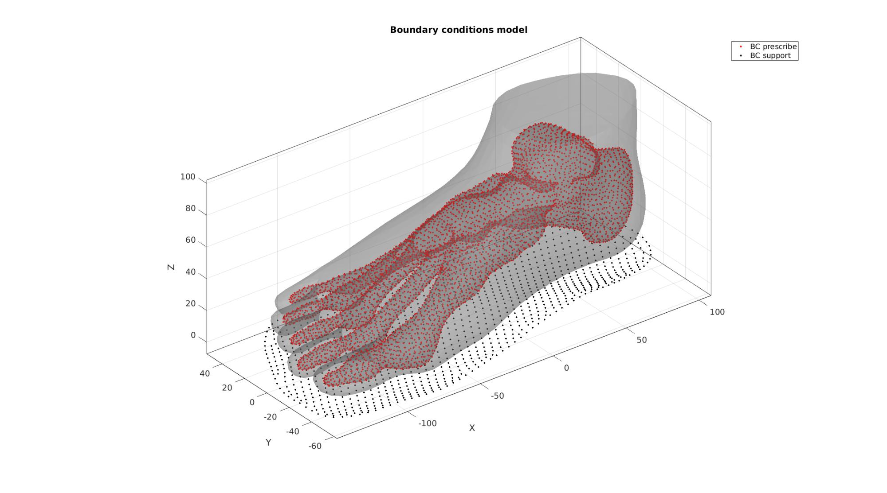

DEMO_febio_0050_foot_insole_01
Below is a demonstration for:
- Building triangulated surface geometry for a foot
- Meshing the foot using tetrahedral elements
- Building surface model of an insole and meshing it with quads
- Extruding the surface to a thickened layer of hexahedral elements
- Defining the boundary conditions
- Coding the febio structure
- Running the model
- Importing and visualizing results
Contents
- Keywords
- Control parameters
- Import surface models
- Compute mesh derived parameters
- Reorient surfaces
- Cut skin surface
- Close over top of skin
- Joining surface features
- Merge shared nodes
- Mesh foot with tetrahedral elements
- Build insole
- Joining node sets
- Define contact surfaces
- Define boundary conditions
- Defining the FEBio input structure
- Quick viewing of the FEBio input file structure
- Exporting the FEBio input file
- Running the FEBio analysis
- Import FEBio results
Keywords
- febio_spec version 2.5
- febio, FEBio
- shoe insole
- contact, sliding, friction
- tetrahedral elements, tet4
- hexahedral elements, hex8
- static, solid
- hyperelastic, Ogden
- displacement logfile
clear; close all; clc;
Plot settings
fontSize=10; faceAlpha1=1; faceAlpha2=0.3; markerSize1=15; markerSize2=10; lineWidth=2;
Control parameters
% Path names defaultFolder = fileparts(fileparts(mfilename('fullpath'))); savePath=fullfile(defaultFolder,'data','temp'); loadPathSurfaces=fullfile(defaultFolder,'data','STL','leg','post'); % Defining file names febioFebFileNamePart='tempModel'; febioFebFileName=fullfile(savePath,[febioFebFileNamePart,'.feb']); %FEB file name febioLogFileName=fullfile(savePath,[febioFebFileNamePart,'.txt']); %FEBio log file name febioLogFileName_disp=[febioFebFileNamePart,'_disp_out.txt']; %Log file name for exporting displacement febioLogFileName_force=[febioFebFileNamePart,'_force_out.txt']; %Log file name for exporting force febioLogFileName_strainEnergy=[febioFebFileNamePart,'_energy_out.txt']; %Log file name for exporting strain energy density % Surface model file names fileNameBones=fullfile(loadPathSurfaces,'Foot_bulk.stl'); fileNameSkin=fullfile(loadPathSurfaces,'Skin_coarse.stl'); %Geometric parameters soleOffsetOutward=3; %How much the insole protrudes outward from the foot numSmoothIterations_sole_Z=10; %Number of smoothing iterations for the sole Z value soleMinThickness=6; %Sole thickness volumeFactor=2; %Volume factor used in tetgen, larger means larger internal elements %Material parameter set c1_1=1e-3; %Shear-modulus-like parameter m1_1=2; %Material parameter setting degree of non-linearity k_1=c1_1*100; %Bulk modulus c1_2=c1_1*10; %Shear-modulus-like parameter m1_2=2; %Material parameter setting degree of non-linearity k_2=c1_2*10; %Bulk modulus % FEA control settings numTimeSteps=10; %Number of time steps desired max_refs=25; %Max reforms max_ups=0; %Set to zero to use full-Newton iterations opt_iter=10; %Optimum number of iterations max_retries=5; %Maximum number of retires dtmin=(1/numTimeSteps)/100; %Minimum time step size dtmax=1/numTimeSteps; %Maximum time step size symmetric_stiffness=0; min_residual=1e-20; %Boundary condition parameters displacementMagnitude=-3; %Displacement applied to the bones %Contact parameters contactPenalty=20; laugon=0; minaug=1; maxaug=10; fric_coeff=0.25;
Import surface models
%Import STL file for the bones [stlStruct] = import_STL(fileNameBones); F1=stlStruct.solidFaces{1}; %Faces V1=stlStruct.solidVertices{1}; %Vertices [F1,V1]=mergeVertices(F1,V1); %Merge nodes %Import STL file for the skin [stlStruct] = import_STL(fileNameSkin); F2=stlStruct.solidFaces{1}; %Faces V2=stlStruct.solidVertices{1}; %Vertices [F2,V2]=mergeVertices(F2,V2); %Merge nodes V2=V2*100; %Scale
Visualize imported surfaces
cFigure; hold on; gpatch(F1,V1,'bw','none',1); gpatch(F2,V2,'rw','none',0.5); camlight('headlight'); axisGeom(gca,fontSize); drawnow;
Compute mesh derived parameters
Compute point spacings for the surfaces meshes. These are useful to relate other mesh sizes to.
pointSpacing1=mean(patchEdgeLengths(F1,V1)); pointSpacing2=mean(patchEdgeLengths(F2,V2)); pointSpacing=mean([pointSpacing1 pointSpacing2]);
Reorient surfaces
Reorient so that the leg points up in a forward view with the toes pointing towards the viewer.
R=euler2DCM([-0.5*pi 0 -0.5*pi]); V1=V1*R; V2=V2*R;
Visualize reoriented surfaces
cFigure; hold on; gpatch(F1,V1,'bw','none',1); gpatch(F2,V2,'rw','none',0.5); camlight('headlight'); axisGeom(gca,fontSize); drawnow;
Cut skin surface
The skin surface is cut such that it stops where the bones of the ankle end in the z direction.
%Create a logic for cutting away faces max_Z1=max(V1(:,3))+2*pointSpacing; %Max Z-level used for cutting logicVertices=V2(:,3)<max_Z1; %Logic for the points below this level logicFaces=all(logicVertices(F2),2); %Logic for the faces logicFaces=triSurfLogicSharpFix(F2,logicFaces,3); %Altered logic so it is smoother
Visualize
cFigure; hold on; gpatch(F1,V1,'bw','none',1); gpatch(F2,V2,logicFaces,'none',0.5); camlight('headlight'); axisGeom(gca,fontSize); drawnow;

Cut away faces using logic
F2=F2(logicFaces,:); %The faces to keep [F2,V2]=patchCleanUnused(F2,V2); %Remove unused points %Attempt to self triangulate potentially jagged edge Eb=patchBoundary(F2,V2); %Get boundary edges indBoundary=edgeListToCurve(Eb); %Convert boundary edges to a curve list indBoundary=indBoundary(1:end-1); %Trim off last point since it is equal to first on a closed loop angleThreshold=pi*(120/180); %threshold for self triangulation [F2,V2,indBoundaryTop]=triSurfSelfTriangulateBoundary(F2,V2,indBoundary,angleThreshold,1); %Force boundary to have the max Z level chosen V2(indBoundaryTop,3)=max_Z1;
Visualize
cFigure; hold on; gpatch(F1,V1,'bw','none',1); gpatch(F2,V2,'rw','k',0.5); plotV(V2(indBoundaryTop,:),'r-','LineWidth',lineWidth); camlight('headlight'); axisGeom(gca,fontSize); drawnow;

Close over top of skin
The top boundary curve of the cut surface is filled with triangles. This is a 2D method. The z-coordinate is added after.
[F2t,V2t]=regionTriMesh2D({V2(indBoundaryTop,[1 2])},pointSpacing2,0,0);
V2t(:,3)=max_Z1; %Add/set z-level
Visualize
cFigure; hold on; gpatch(F1,V1,'bw','none',1); gpatch(F2,V2,'rw','k',0.5); gpatch(F2t,V2t,'gw','k',1); plotV(V2(indBoundaryTop,:),'r-','LineWidth',lineWidth); camlight('headlight'); axisGeom(gca,fontSize); drawnow;
Joining surface features
Add all surface sets together in joint list of faces, vertices
[FT,VT,CT]=joinElementSets({F1,F2,F2t},{V1,V2,V2t});
Merge shared nodes
The join operation only adds the sets together. Nodes with the same coordinates are not seen as the same yet and need to be merged.
[FT,VT]=mergeVertices(FT,VT); %Merge nodes
Visualize
cFigure; hold on; gpatch(FT,VT,CT,'k',0.5); patchNormPlot(FT,VT); camlight('headlight'); axisGeom(gca,fontSize); colormap gjet; icolorbar; drawnow;
Mesh foot with tetrahedral elements
Tet meshing is based on tetgen. TetGen requires a interior points for regions to be meshed, as well as intertior points for holes.
Define region points
[V_region]=getInnerPoint({FT(CT==2 | CT==3,:),FT(CT==1,:)},{VT,VT});
[V_hole]=getInnerPoint(FT(CT==1,:),VT);
Visualize interior points
cFigure; hold on; gpatch(FT,VT,'kw','none',0.2); hp1=plotV(V_region,'r.','markerSize',markerSize1); hp2=plotV(V_hole,'b.','markerSize',markerSize1); legend([hp1 hp2],{'Region point','Hole point'}); camlight('headlight'); axisGeom(gca,fontSize); drawnow;

Mesh using tetgen
inputStruct.stringOpt='-pq1.2AaY'; %TetGen option string inputStruct.Faces=FT; %The faces inputStruct.Nodes=VT; %The vertices inputStruct.holePoints=V_hole; %The hole interior points inputStruct.faceBoundaryMarker=CT; %Face boundary markers inputStruct.regionPoints=V_region; %The region interior points inputStruct.regionA=tetVolMeanEst(FT,VT)*volumeFactor; %Volume for regular tets
Mesh model using tetrahedral elements using tetGen
[meshOutput]=runTetGen(inputStruct); %Run tetGen
%%%%%%%%%%%%%%%%%%%%%%%%%%%%%%%%%%%%%%%%%%%%% --- TETGEN Tetrahedral meshing --- 26-Aug-2019 22:02:05 %%%%%%%%%%%%%%%%%%%%%%%%%%%%%%%%%%%%%%%%%%%%% --- Writing SMESH file --- 26-Aug-2019 22:02:05 ----> Adding node field ----> Adding facet field ----> Adding holes specification ----> Adding region specification --- Done --- 26-Aug-2019 22:02:05 --- Running TetGen to mesh input boundary--- 26-Aug-2019 22:02:05 Opening /mnt/data/MATLAB/GIBBON/data/temp/temp.smesh. Delaunizing vertices... Delaunay seconds: 0.039281 Creating surface mesh ... Surface mesh seconds: 0.011722 Recovering boundaries... Boundary recovery seconds: 0.025185 Removing exterior tetrahedra ... Spreading region attributes. Exterior tets removal seconds: 0.014681 Recovering Delaunayness... Delaunay recovery seconds: 0.012726 Refining mesh... Refinement seconds: 0.25109 Optimizing mesh... Optimization seconds: 0.013221 Writing /mnt/data/MATLAB/GIBBON/data/temp/temp.1.node. Writing /mnt/data/MATLAB/GIBBON/data/temp/temp.1.ele. Writing /mnt/data/MATLAB/GIBBON/data/temp/temp.1.face. Writing /mnt/data/MATLAB/GIBBON/data/temp/temp.1.edge. Output seconds: 0.172519 Total running seconds: 0.540901 Statistics: Input points: 6509 Input facets: 13010 Input segments: 19515 Input holes: 1 Input regions: 1 Mesh points: 14265 Mesh tetrahedra: 70418 Mesh faces: 147341 Mesh faces on exterior boundary: 13010 Mesh faces on input facets: 13010 Mesh edges on input segments: 19515 Steiner points inside domain: 7756 --- Done --- 26-Aug-2019 22:02:06 %%%%%%%%%%%%%%%%%%%%%%%%%%%%%%%%%%%%%%%%%%%%% --- Importing TetGen files --- 26-Aug-2019 22:02:06 --- Done --- 26-Aug-2019 22:02:07
Access model element and patch data
Fb_foot=meshOutput.facesBoundary; %Boundary faces of the foot Cb_foot=meshOutput.boundaryMarker; %Boundary marker/color data for the foot V_foot=meshOutput.nodes; %The vertices/nodes E_foot=meshOutput.elements; %The tet4 elements
Visualizing mesh using meshView, see also anim8
meshView(meshOutput);
Build insole
The insole is created by taking the 2D convex hull of the foot (ignoring the z-direction). Next this convex hull is resampled and filled with triangular elements. The z-coordinates are then based on the nearest foot nodes. The z-coordinate data is next smoothed to create a smooth surface. This surface is next thickened to form hexahedral elements.
Create sole boundary curve in 2D
% Offset surface outward to thicken so sole is enlarged outward [~,~,Nv]=patchNormal(FT,VT); VT_sole=VT+soleOffsetOutward.*Nv; P=VT_sole(:,[1 2]); %Point set flattened to 2D DT=delaunayTriangulation(P); %Delaunay triangulation of 2D set VD=DT.Points; %Delaunay point set VD(:,3)=min(VT(:,3)); %Set z-coord to minimum for now indChull=DT.convexHull; %Ordered point list for conhex hull indChull=indChull(1:end-1); %Trim away last (=start) point to avoid double V_chull=VD(indChull,:); %Vertices for convex hull D=max(pathLength(V_chull)); %Get length of sole curve for resampling numResample=ceil(D./pointSpacing); V_sole_curve=evenlySampleCurve(V_chull,numResample,'pchip',1);
Visualize
cFigure; hold on; gpatch(FT,VT,'kw','none',0.25); plotV(P,'k.','MarkerSize',markerSize2); plotV(V_chull,'r.','MarkerSize',markerSize1*2); plotV(V_sole_curve,'b.-','MarkerSize',markerSize1,'LineWidth',lineWidth); camlight('headlight'); axisGeom(gca,fontSize); colormap gjet; icolorbar; drawnow;
Build sole top surface
[F_sole_top,V_sole_top]=regionTriMesh2D({V_sole_curve(:,[1 2])},pointSpacing*2,0,0);
V_sole_top(:,3)=mean(V_sole_curve(:,3));
tri2quad_optionStruct.maxAngleDeviation=60*(pi/180);
tri2quad_optionStruct.selectionMethod='best';
tri2quad_optionStruct.triangleConvert=1;
tri2quad_optionStruct.fourConnectConvert=1;
[F_sole_top,V_sole_top]=tri2quadGroupSplit(F_sole_top,V_sole_top,tri2quad_optionStruct);
Eb=patchBoundary(F_sole_top,V_sole_top);
indB=unique(Eb(:));
%Free smoothing of boundary
clear cParSmooth;
cParSmooth.n=25;
cParSmooth.Method='HC';
[p]=patchSmooth(Eb,V_sole_top,[],cParSmooth);
V_sole_top(indB,:)=p(indB,:);
%Constrained smoothing
clear cParSmooth;
cParSmooth.n=25;
cParSmooth.Method='HC';
cParSmooth.RigidConstraints=indB;
[V_sole_top]=patchSmooth(F_sole_top,V_sole_top,[],cParSmooth);
%Get z-coordinate
[~,indMin]=minDist(V_sole_top,VT);
V_sole_top(:,3)=VT(indMin,3);
clear cParSmooth;
cParSmooth.n=numSmoothIterations_sole_Z;
cParSmooth.Method='LAP';
[V_sole_top(:,3)]=patchSmooth(F_sole_top,V_sole_top(:,3),[],cParSmooth);
%Free smoothing of boundary
clear cParSmooth;
cParSmooth.n=numSmoothIterations_sole_Z;
cParSmooth.Method='LAP';
[p]=patchSmooth(Eb,V_sole_top,[],cParSmooth);
V_sole_top(indB,3)=p(indB,3);
V_sole_top(:,3)=V_sole_top(:,3)-pointSpacing/3;
pointSpacingSole=mean(patchEdgeLengths(F_sole_top,V_sole_top));
Visualize
cFigure; hold on; gpatch(FT,VT,'kw','none',0.25); gpatch(F_sole_top,V_sole_top,'gw','k',1); patchNormPlot(F_sole_top,V_sole_top); camlight('headlight'); axisGeom(gca,fontSize); colormap gjet; icolorbar; drawnow;

Create bottom surface of sole
F_sole_bottom=F_sole_top; V_sole_bottom=V_sole_top; V_sole_bottom(:,3)=(V_sole_top(:,3))-soleMinThickness; cFigure; hold on; gpatch(FT,VT,'kw','none',0.25); gpatch(F_sole_top,V_sole_top,'gw','k',1); gpatch(F_sole_bottom,V_sole_bottom,'bw','k',1); patchNormPlot(F_sole_top,V_sole_top); camlight('headlight'); axisGeom(gca,fontSize); colormap gjet; icolorbar; drawnow;

Create hexahedral elements
V_sole=[V_sole_bottom;V_sole_top]; E_sole=[F_sole_bottom F_sole_top+size(V_sole_bottom,1)]; F_sole_top=F_sole_top+size(V_sole_bottom,1); %Fix indices %Use element2patch to get patch data F_E_sole=element2patch(E_sole); indBoundaryFaces=tesBoundary(F_E_sole,V_sole); Fb_sole=F_E_sole(indBoundaryFaces,:);
Visualize
cFigure; hold on; title('Hexahedral mesh'); gpatch(FT,VT,'kw','none',0.25); gpatch(Fb_sole,V_sole,'bw','k',1); patchNormPlot(Fb_sole,V_sole); axisGeom; camlight headlight; drawnow;
Joining node sets
V=[V_foot;V_sole;]; %Combined node sets E_sole=E_sole+size(V_foot,1); %Fixed element indices F_sole_top=F_sole_top+size(V_foot,1); %Fixed element indices F_sole_bottom=F_sole_bottom+size(V_foot,1); %Fixed indices F_E_sole=F_E_sole+size(V_foot,1); %Fixed element indices Fb_sole=Fb_sole+size(V_foot,1); %Fixed element indices
Visualize
cFigure; hold on; title('Hexahedral mesh'); gpatch(Fb_foot,V,Cb_foot,'k',1); gpatch(Fb_sole,V,'kw','k',1); % patchNormPlot(FEs,V); colormap gjet; icolorbar; axisGeom; camlight headlight; drawnow;

Define contact surfaces
% The rigid master surface of the sphere F_contact_master=F_sole_top; % The deformable slave surface of the slab F_contact_slave=fliplr(Fb_foot(Cb_foot==2,:));
Visualize contact surfaces
cFigure; hold on; title('Contact sets and normal directions','FontSize',fontSize); gpatch(Fb_foot,V,'kw','none',faceAlpha2); gpatch(Fb_sole,V,'kw','none',faceAlpha2); hl(1)=gpatch(F_contact_master,V,'gw','k',1); patchNormPlot(F_contact_master,V); hl(2)=gpatch(F_contact_slave,V,'bw','k',1); patchNormPlot(F_contact_slave,V); legend(hl,{'Master','Slave'}); axisGeom(gca,fontSize); camlight headlight; drawnow;

Define boundary conditions
%Supported nodes bcSupportList=unique(F_sole_bottom); %Prescribed displacement nodes bcPrescribeList=unique(Fb_foot(Cb_foot==1,:));
Visualize BC's
hf=cFigure; hold on; title('Boundary conditions model','FontSize',fontSize); gpatch(Fb_foot,V,'kw','none',faceAlpha2); gpatch(Fb_sole,V,'kw','none',faceAlpha2); hl2(1)=plotV(V(bcPrescribeList,:),'r.','MarkerSize',markerSize2); hl2(2)=plotV(V(bcSupportList,:),'k.','MarkerSize',markerSize2); legend(hl2,{'BC prescribe','BC support'}); axisGeom(gca,fontSize); camlight headlight; drawnow;

Defining the FEBio input structure
See also febioStructTemplate and febioStruct2xml and the FEBio user manual.
%Get a template with default settings [febio_spec]=febioStructTemplate; %febio_spec version febio_spec.ATTR.version='2.5'; %Module section febio_spec.Module.ATTR.type='solid'; %Control section febio_spec.Control.analysis.ATTR.type='static'; febio_spec.Control.time_steps=numTimeSteps; febio_spec.Control.step_size=1/numTimeSteps; febio_spec.Control.time_stepper.dtmin=dtmin; febio_spec.Control.time_stepper.dtmax=dtmax; febio_spec.Control.time_stepper.max_retries=max_retries; febio_spec.Control.time_stepper.opt_iter=opt_iter; febio_spec.Control.max_refs=max_refs; febio_spec.Control.max_ups=max_ups; febio_spec.Control.symmetric_stiffness=symmetric_stiffness; febio_spec.Control.min_residual=min_residual; %Material section febio_spec.Material.material{1}.ATTR.type='Ogden'; febio_spec.Material.material{1}.ATTR.id=1; febio_spec.Material.material{1}.c1=c1_1; febio_spec.Material.material{1}.m1=m1_1; febio_spec.Material.material{1}.c2=c1_1; febio_spec.Material.material{1}.m2=-m1_1; febio_spec.Material.material{1}.k=k_1; febio_spec.Material.material{2}.ATTR.type='Ogden unconstrained'; febio_spec.Material.material{2}.ATTR.id=2; febio_spec.Material.material{2}.c1=c1_2; febio_spec.Material.material{2}.m1=m1_2; febio_spec.Material.material{2}.c2=c1_2; febio_spec.Material.material{2}.m2=-m1_2; febio_spec.Material.material{2}.cp=k_2; %Geometry section % -> Nodes febio_spec.Geometry.Nodes{1}.ATTR.name='nodeSet_all'; %The node set name febio_spec.Geometry.Nodes{1}.node.ATTR.id=(1:size(V,1))'; %The node id's febio_spec.Geometry.Nodes{1}.node.VAL=V; %The nodel coordinates % -> Elements febio_spec.Geometry.Elements{1}.ATTR.type='tet4'; %Element type of this set febio_spec.Geometry.Elements{1}.ATTR.mat=1; %material index for this set febio_spec.Geometry.Elements{1}.ATTR.name='Foot'; %Name of the element set febio_spec.Geometry.Elements{1}.elem.ATTR.id=(1:1:size(E_foot,1))'; %Element id's febio_spec.Geometry.Elements{1}.elem.VAL=E_foot; febio_spec.Geometry.Elements{2}.ATTR.type='hex8'; %Element type of this set febio_spec.Geometry.Elements{2}.ATTR.mat=2; %material index for this set febio_spec.Geometry.Elements{2}.ATTR.name='Sole'; %Name of the element set febio_spec.Geometry.Elements{2}.elem.ATTR.id=size(E_foot,1)+(1:1:size(E_sole,1))'; %Element id's febio_spec.Geometry.Elements{2}.elem.VAL=E_sole; % -> NodeSets febio_spec.Geometry.NodeSet{1}.ATTR.name='bcSupportList'; febio_spec.Geometry.NodeSet{1}.node.ATTR.id=bcSupportList(:); febio_spec.Geometry.NodeSet{2}.ATTR.name='bcPrescribeList'; febio_spec.Geometry.NodeSet{2}.node.ATTR.id=bcPrescribeList(:); % -> Surfaces febio_spec.Geometry.Surface{1}.ATTR.name='contact_master'; febio_spec.Geometry.Surface{1}.quad4.ATTR.lid=(1:1:size(F_contact_master,1))'; febio_spec.Geometry.Surface{1}.quad4.VAL=F_contact_master; febio_spec.Geometry.Surface{2}.ATTR.name='contact_slave'; febio_spec.Geometry.Surface{2}.tri3.ATTR.lid=(1:1:size(F_contact_slave,1))'; febio_spec.Geometry.Surface{2}.tri3.VAL=F_contact_slave; % -> Surface pairs febio_spec.Geometry.SurfacePair{1}.ATTR.name='Contact1'; febio_spec.Geometry.SurfacePair{1}.master.ATTR.surface=febio_spec.Geometry.Surface{1}.ATTR.name; febio_spec.Geometry.SurfacePair{1}.slave.ATTR.surface=febio_spec.Geometry.Surface{2}.ATTR.name; %Boundary condition section % -> Fix boundary conditions febio_spec.Boundary.fix{1}.ATTR.bc='x'; febio_spec.Boundary.fix{1}.ATTR.node_set=febio_spec.Geometry.NodeSet{1}.ATTR.name; febio_spec.Boundary.fix{2}.ATTR.bc='y'; febio_spec.Boundary.fix{2}.ATTR.node_set=febio_spec.Geometry.NodeSet{1}.ATTR.name; febio_spec.Boundary.fix{3}.ATTR.bc='z'; febio_spec.Boundary.fix{3}.ATTR.node_set=febio_spec.Geometry.NodeSet{1}.ATTR.name; febio_spec.Boundary.fix{4}.ATTR.bc='x'; febio_spec.Boundary.fix{4}.ATTR.node_set=febio_spec.Geometry.NodeSet{2}.ATTR.name; febio_spec.Boundary.fix{5}.ATTR.bc='y'; febio_spec.Boundary.fix{5}.ATTR.node_set=febio_spec.Geometry.NodeSet{2}.ATTR.name; % -> Prescribed boundary conditions febio_spec.Boundary.prescribe{1}.ATTR.bc='z'; febio_spec.Boundary.prescribe{1}.ATTR.node_set=febio_spec.Geometry.NodeSet{2}.ATTR.name; febio_spec.Boundary.prescribe{1}.scale.ATTR.lc=1; febio_spec.Boundary.prescribe{1}.scale.VAL=1; febio_spec.Boundary.prescribe{1}.relative=1; febio_spec.Boundary.prescribe{1}.value=displacementMagnitude; %Contact section %Contact section febio_spec.Contact.contact{1}.ATTR.surface_pair=febio_spec.Geometry.SurfacePair{1}.ATTR.name; febio_spec.Contact.contact{1}.ATTR.type='sliding-elastic'; febio_spec.Contact.contact{1}.two_pass=1; febio_spec.Contact.contact{1}.laugon=laugon; febio_spec.Contact.contact{1}.tolerance=0.2; febio_spec.Contact.contact{1}.gaptol=0; febio_spec.Contact.contact{1}.minaug=minaug; febio_spec.Contact.contact{1}.maxaug=maxaug; febio_spec.Contact.contact{1}.search_tol=0.01; febio_spec.Contact.contact{1}.search_radius=0.1; febio_spec.Contact.contact{1}.symmetric_stiffness=0; febio_spec.Contact.contact{1}.auto_penalty=1; febio_spec.Contact.contact{1}.penalty=contactPenalty; febio_spec.Contact.contact{1}.fric_coeff=fric_coeff; %Output section % -> log file febio_spec.Output.logfile.ATTR.file=febioLogFileName; febio_spec.Output.logfile.node_data{1}.ATTR.file=febioLogFileName_disp; febio_spec.Output.logfile.node_data{1}.ATTR.data='ux;uy;uz'; febio_spec.Output.logfile.node_data{1}.ATTR.delim=','; febio_spec.Output.logfile.node_data{1}.VAL=1:size(V,1); febio_spec.Output.logfile.node_data{2}.ATTR.file=febioLogFileName_force; febio_spec.Output.logfile.node_data{2}.ATTR.data='Rx;Ry;Rz'; febio_spec.Output.logfile.node_data{2}.ATTR.delim=','; febio_spec.Output.logfile.node_data{2}.VAL=1:size(V,1); febio_spec.Output.logfile.element_data{1}.ATTR.file=febioLogFileName_strainEnergy; febio_spec.Output.logfile.element_data{1}.ATTR.data='sed'; febio_spec.Output.logfile.element_data{1}.ATTR.delim=','; febio_spec.Output.logfile.element_data{1}.VAL=1:size(E_foot,1);
Quick viewing of the FEBio input file structure
The febView function can be used to view the xml structure in a MATLAB figure window.
febView(febio_spec); %Viewing the febio file
Exporting the FEBio input file
Exporting the febio_spec structure to an FEBio input file is done using the febioStruct2xml function.
febioStruct2xml(febio_spec,febioFebFileName); %Exporting to file and domNode
Running the FEBio analysis
To run the analysis defined by the created FEBio input file the runMonitorFEBio function is used. The input for this function is a structure defining job settings e.g. the FEBio input file name. The optional output runFlag informs the user if the analysis was run succesfully.
febioAnalysis.run_filename=febioFebFileName; %The input file name febioAnalysis.run_logname=febioLogFileName; %The name for the log file febioAnalysis.disp_on=1; %Display information on the command window febioAnalysis.disp_log_on=1; %Display convergence information in the command window febioAnalysis.runMode='external';%'internal'; febioAnalysis.t_check=0.25; %Time for checking log file (dont set too small) febioAnalysis.maxtpi=1e99; %Max analysis time febioAnalysis.maxLogCheckTime=10; %Max log file checking time [runFlag]=runMonitorFEBio(febioAnalysis);%START FEBio NOW!!!!!!!!
%%%%%%%%%%%%%%%%%%%%%%%%%%%%%%%%%%%%%%%%%%%%% --- STARTING FEBIO JOB --- 26-Aug-2019 22:02:16 Waiting for log file... Proceeding to check log file...26-Aug-2019 22:02:17 ------- converged at time : 0.1 ------- converged at time : 0.2 ------- converged at time : 0.3 ------- converged at time : 0.4 ------- converged at time : 0.5 ------- converged at time : 0.6 ------- converged at time : 0.695393 ------- converged at time : 0.782561 ------- converged at time : 0.862222 ------- converged at time : 0.932212 ------- converged at time : 0.996191 ------- converged at time : 1 --- Done --- 26-Aug-2019 22:04:30
Import FEBio results
if runFlag==1 %i.e. a succesful run
% Importing nodal displacements from a log file [time_mat, N_disp_mat,~]=importFEBio_logfile(fullfile(savePath,febioLogFileName_disp)); %Nodal displacements time_mat=[0; time_mat(:)]; %Time N_disp_mat=N_disp_mat(:,2:end,:); sizImport=size(N_disp_mat); sizImport(3)=sizImport(3)+1; N_disp_mat_n=zeros(sizImport); N_disp_mat_n(:,:,2:end)=N_disp_mat; N_disp_mat=N_disp_mat_n; DN=N_disp_mat(:,:,end); V_def=V+DN; V_DEF=N_disp_mat+repmat(V,[1 1 size(N_disp_mat,3)]); X_DEF=V_DEF(:,1,:); Y_DEF=V_DEF(:,2,:); Z_DEF=V_DEF(:,3,:); C=sqrt(sum(DN(:,3).^2,2)); [CF]=vertexToFaceMeasure(Fb_foot,C);
Importing element strain energies from a log file
[~,E_energy,~]=importFEBio_logfile(fullfile(savePath,febioLogFileName_strainEnergy)); %Element strain energy %Remove nodal index column E_energy=E_energy(:,2:end,:); %Add initial state i.e. zero energy sizImport=size(E_energy); sizImport(3)=sizImport(3)+1; E_energy_mat_n=zeros(sizImport); E_energy_mat_n(:,:,2:end)=E_energy; E_energy=E_energy_mat_n; [FE_foot,C_energy_foot]=element2patch(E_foot,E_energy(:,:,end)); % [FE_foot,C_energy_foot]=element2patch(E_foot,E_energy(1:size(E_foot,1),:,1)); indBoundaryFacesFoot=tesBoundary(FE_foot,V);
Plotting the simulated results using anim8 to visualize and animate deformations
% Create basic view and store graphics handle to initiate animation hf=cFigure; %Open figure gtitle([febioFebFileNamePart,': Press play to animate']); hp1=gpatch(Fb_foot,V_def,[1 0.95 0.8],'none',0.25); %Add graphics object to animate hp2=gpatch(F_sole_top,V_def,C,'none',1); %Add graphics object to animate hp2.FaceColor='Interp'; % gpatch(Fb_sole,V_def,'kw','none',0.2); %Add graphics object to animate axisGeom(gca,fontSize); colormap(flipud(kvw(250))); colorbar; caxis([0 max(C)/6]); axis([min(X_DEF(:)) max(X_DEF(:)) min(Y_DEF(:)) max(Y_DEF(:)) min(Z_DEF(:)) max(Z_DEF(:))]); view([-30 -30]); camlight headlight; lighting gouraud; % Set up animation features animStruct.Time=time_mat; %The time vector for qt=1:1:size(N_disp_mat,3) %Loop over time increments DN=N_disp_mat(:,:,qt); %Current displacement V_def=V+DN; %Current nodal coordinates C=sqrt(sum(DN(:,3).^2,2)); %New color %Set entries in animation structure animStruct.Handles{qt}=[hp2 hp2 hp1]; %Handles of objects to animate animStruct.Props{qt}={'Vertices','CData','Vertices'}; %Properties of objects to animate animStruct.Set{qt}={V_def,C,V_def}; %Property values for to set in order to animate end anim8(hf,animStruct); %Initiate animation feature drawnow;
Plotting the simulated results using anim8 to visualize and animate deformations
% Create basic view and store graphics handle to initiate animation hf=cFigure; %Open figure gtitle([febioFebFileNamePart,': Press play to animate']); [CV]=faceToVertexMeasure(FE_foot(indBoundaryFacesFoot,:),V,C_energy_foot(indBoundaryFacesFoot,:)); hp1=gpatch(FE_foot(indBoundaryFacesFoot,:),V_def,CV,'w',1); %Add graphics object to animate hp1.FaceColor='Interp'; hp2=gpatch(Fb_sole,V_def,'gw','none',0.5); %Add graphics object to animate axisGeom(gca,fontSize); colormap(gjet(250)); colorbar; caxis([0 max(C_energy_foot)/100]); axis([min(X_DEF(:)) max(X_DEF(:)) min(Y_DEF(:)) max(Y_DEF(:)) min(Z_DEF(:)) max(Z_DEF(:))]); view([-30 -30]); camlight headlight; lighting gouraud; % Set up animation features animStruct.Time=time_mat; %The time vector for qt=1:1:size(N_disp_mat,3) %Loop over time increments DN=N_disp_mat(:,:,qt); %Current displacement V_def=V+DN; %Current nodal coordinates [FE_foot,C_energy_foot]=element2patch(E_foot,E_energy(:,:,qt)); [CV]=faceToVertexMeasure(FE_foot(indBoundaryFacesFoot,:),V,C_energy_foot(indBoundaryFacesFoot,:)); %Set entries in animation structure animStruct.Handles{qt}=[hp1 hp1 hp2]; %Handles of objects to animate animStruct.Props{qt}={'Vertices','CData','Vertices'}; %Properties of objects to animate animStruct.Set{qt}={V_def,CV,V_def}; %Property values for to set in order to animate end anim8(hf,animStruct); %Initiate animation feature drawnow;

end

GIBBON www.gibboncode.org
Kevin Mattheus Moerman, gibbon.toolbox@gmail.com
GIBBON footer text
License: https://github.com/gibbonCode/GIBBON/blob/master/LICENSE
GIBBON: The Geometry and Image-based Bioengineering add-On. A toolbox for image segmentation, image-based modeling, meshing, and finite element analysis.
Copyright (C) 2019 Kevin Mattheus Moerman
This program is free software: you can redistribute it and/or modify it under the terms of the GNU General Public License as published by the Free Software Foundation, either version 3 of the License, or (at your option) any later version.
This program is distributed in the hope that it will be useful, but WITHOUT ANY WARRANTY; without even the implied warranty of MERCHANTABILITY or FITNESS FOR A PARTICULAR PURPOSE. See the GNU General Public License for more details.
You should have received a copy of the GNU General Public License along with this program. If not, see http://www.gnu.org/licenses/.